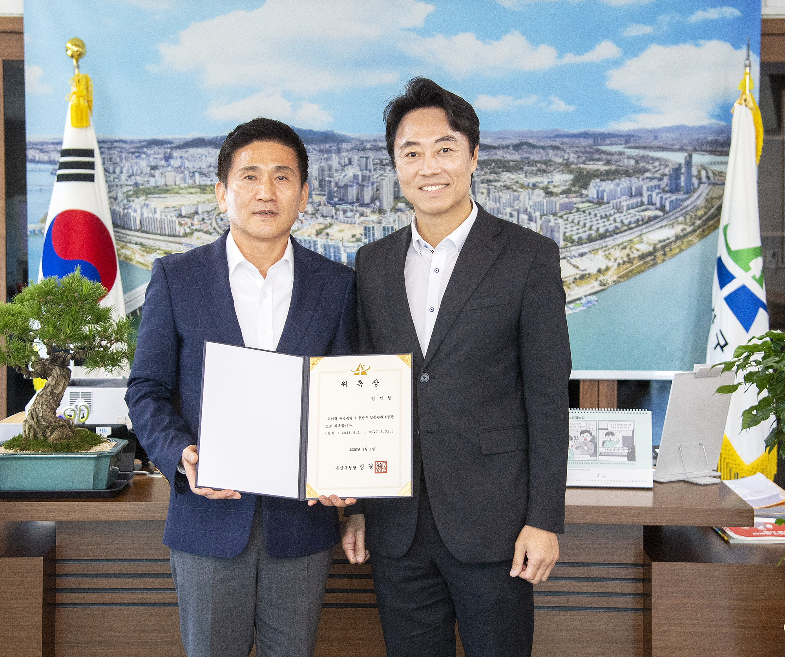

용산구, 서울 자치구 첫 '갈등관리조정관' 도입으로 정비사업 속도 높인다
갈등 예방·공정관리 연계, 정비사업 기간 단축 기대

[시사포커스 / 김재록 기자] 서울 용산구(구청장 김경대)는 재개발·재건축 등 정비사업 과정에서 발생하는 갈등을 예방하고 사업 지연을 최소화하기 위해 서울 자치구 최초로 '갈등관리조정관'을 위촉하고 본격 운영에 들어간다고 30일 밝혔다. 갈등관리조정관은 정비사업 추진 과정에서 분쟁이 발생하거나 갈등이 예상될 경우 사업부서의 요청에 따라 현장조사와 이해관계자 면담을 실시하고, 객관적이고 전문적인 조정·중재를 지원한다. 주요 역할은 ▲정비사업 지연 요인 사전 점검 ▲이해관계자 간 소통 및 협의 지원 ▲갈등 조정 및 분쟁 해결 ▲사업별 맞춤형 자문·전문 상담 등이다.
김경대 용산구청장은 "정비사업은 주민 간 신뢰와 충분한 소통이 바탕이 될 때 더욱 안정적이고 신속하게 추진될 수 있다"며 "갈등관리조정관과 신속추진단을 중심으로 갈등 예방부터 공정관리까지 체계적으로 지원해 지역 내 정비사업이 차질 없이 추진될 수 있도록 최선을 다하겠다"고 말했다. 갈등관리조정관은 민선9기 구청장 제1호 결재로 신설된 '용산개발신속추진단'과 연계하여 운영되며, 신속추진단은 ▲사업별 공정관리 ▲정기·수시 점검회의 운영 ▲정비사업 조합 임원 소통회의 운영 ▲전문가 자문 및 상담 ▲주민 역량강화 교육과정 운영 ▲주요 갈등현안 관리·조정 등을 담당한다.
용산구에 따르면, 이 같은 공정관리 강화는 이미 가시적 성과로 이어지고 있다. 청화아파트 재건축사업은 정비구역 지정·고시까지 표준 처리기간 730일보다 131일 앞당긴 599일 만에 행정절차를 완료했다. 반도아파트 재건축사업은 정비계획 신속통합기획 3차 자문까지 표준 처리기간인 490일보다 268일 단축한 222일 만에 절차를 마쳐 올해 하반기 정비구역 지정을 목표로 사업을 추진하고 있다. 구는 사업부서와 조합, 전문가가 함께 참여하는 협업체계를 통해 현장 의견을 공유하고 주요 현안을 체계적으로 관리함으로써 사업 추진의 실행력을 높여 나갈 방침이다.